Årsavslutning er en kritisk og kompleks prosess som markerer slutten på et regnskapsår og sikrer at virksomhetens finansielle rapporter reflekterer den korrekte økonomiske situasjonen. Denne prosessen omfatter en rekke tekniske og strategiske aktiviteter som krever grundig planlegging, systematisk gjennomføring og nøye kvalitetskontroll. Artikkelen gir en omfattende guide til alle aspekter ved årsavslutning i norsk regnskap.
For en grundig gjennomgang av årsberetningen, se vår nye artikkel om årsberetning.
Seksjon 1: Årsavslutningens Grunnleggende Konsept
Årsavslutning er den systematiske prosessen hvor alle regnskapsmessige transaksjoner og justeringer fra regnskapsåret samles, kontrolleres og presenteres i de offisielle årsregnskapene. Prosessen sikrer at balansen og resultatregnskapet gir et rettvisende bilde av virksomhetens økonomiske stilling og resultater.
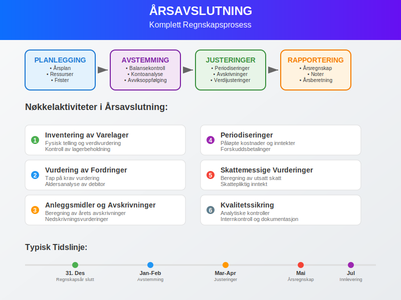
En viktig del av årsavslutningen er sluttoppgjøret, hvor alle kontoer avstemmes og endelig godkjennes. Les mer om prosessen for Sluttoppgjør i regnskap for en detaljert gjennomgang.
1.1 Formål med Årsavslutning
Årsavslutning tjener flere kritiske formål:
- Juridisk overholdelse: Oppfyller krav i regnskapslov og annen relevant lovgivning
- Interessentkommunikasjon: Gir reliable finansielle data til investorer, kreditorer og myndigheter
- Intern styring: Leverer grunnlag for strategiske beslutninger og fremtidig planlegging
- Skatterapportering: Danner basis for skatteberegning og innlevering av selvangivelse, og reduserer risiko for baksmell
1.2 Tidsperspektiv og Frister
Norske virksomheter må følge strenge tidsfrister for årsavslutning:
- Årsregnskap: Senest 5 måneder etter regnskapsårets slutt
- Årsberetning: Samtidig med årsregnskapet
- Generalforsamling: Senest 6 måneder etter regnskapsårets slutt
- Innlevering: Til Regnskapsregisteret senest 7 måneder etter regnskapsårets slutt
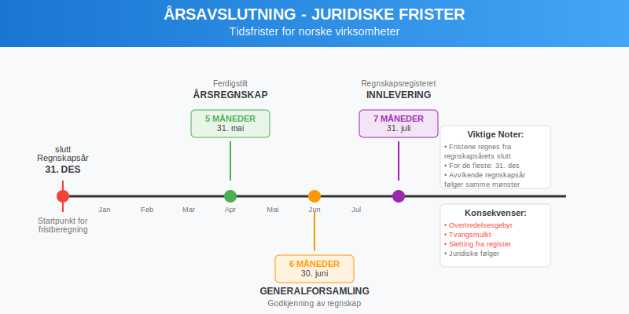
Seksjon 2: Forberedende Fase - Planlegging og Organisering
2.1 Årsavslutningsplan
En strukturert årsavslutningsplan er essensielt for effektiv gjennomføring:
| Aktivitet | Ansvarlig | Frist | Status |
|---|---|---|---|
| Inventering av varelager | Lagersjef | 31. desember | Planlagt |
| Avstemming av bankkontoer | Regnskapsfører | 5. januar | Planlagt |
| Vurdering av fordringer | Økonomisjef | 10. januar | Planlagt |
| Avskrivningsberegninger | Controller | 15. januar | Planlagt |
| Periodiseringer | Regnskapsfører | 20. januar | Planlagt |
2.2 Ressursallokering
Vellykket årsavslutning krever:
- Kompetent personal: Erfarne regnskapsførere og controllere
- Tekniske verktøy: Moderne regnskapssystemer og analyseverktøy
- Tidsmessige ressurser: Tilstrekkelig tid til grundig kvalitetskontroll
- Ekstern bistand: Revisorer og spesialiserte rådgivere ved behov
Tip: Unngå skippertak ved å starte planleggingen tidlig. Les mer i Skippertak for praktiske råd.
2.3 Dokumentasjonsrutiner
Etablering av systematiske dokumentasjonsrutiner sikrer sporbarhet:
- Oppbevaring av alle bilag og dokumenter
- Arkivering av regnskapsjournaler og -rapporter
- Sikring av elektroniske data og backup-rutiner
- Utarbeidelse av kontrollspor for alle justeringsposter
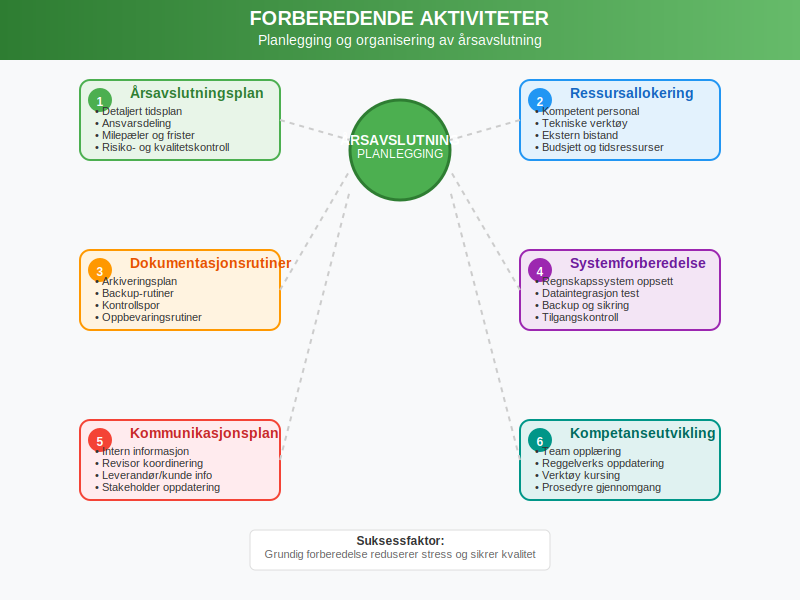
Seksjon 3: Gjennomgang og Avstemming av Kontoer
3.1 Balansekontroller
Den første fasen i den praktiske årsavslutningen innebærer grundig gjennomgang av alle balancekontoer:
3.1.1 Eiendelskontoer (Aktiva)
Anleggsmidler:
- Kontroll av anleggsmidler mot fysisk inventering
- Vurdering av nedskrivningsbehov for fast eiendom og utstyr
- Beregning av avskrivninger for regnskapsåret
- Oppfølging av varige driftsmidler og deres utvikling
Omløpsmidler:
- Inventering og verdivurdering av varelager
- Avstemming av kundefordringer og vurdering av tap på krav
- Kontroll av banksaldoer og kassebeholdning
- Vurdering av kortsiktige investeringer til markedsverdi
3.2 Gjeldskontoer (Passiva)
Langsiktig gjeld:
- Avstemming av banklån mot låneavtaler og amortiseringsplaner
- Kontroll av pensjonsforpliktelser
- Vurdering av andre langsiktige forpliktelser
Kortsiktig gjeld:
- Avstemming av leverandørgjeld mot fakturaer og kontrakter
- Beregning av påløpte kostnader og feriepengeforpliktelser
- Kontroll av skattegjeld og avgiftsforpliktelser
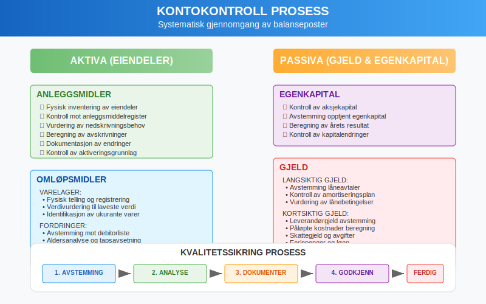
3.3 Egenkapitalkontoer
Gjennomgang av egenkapital innebærer:
- Kontroll av aksjekapital mot aksjonærregistre
- Avstemming av opptjent egenkapital mot tidligere års avslutning
- Beregning av årets resultatoverføring
- Kontroll av utbyttebetalinger og kapitalendringer
Seksjon 4: Periodiseringer og Justeringsposter
4.1 Periodiseringsprinsippet
Periodiseringsprinsippet krever at alle inntekter og kostnader som vedrører regnskapsåret inkluderes, uavhengig av når betalingen skjer.
4.1.1 Påløpte Kostnader
Påløpte kostnader er kostnader som er pådratt, men ikke fakturert eller betalt:
- Lønn og feriepenger: Opptjente rettigheter som ikke er utbetalt
- Renter: Påløpte rentekostnader på lån
- Strøm og andre driftskostnader: Forbruk som ikke er fakturert
- Profesjonelle tjenester: Leveranser mottatt, men ikke fakturert
4.1.2 Forhåndsbetalte Kostnader
Forhåndsbetalte kostnader representerer utgifter betalt i inneværende år som vedrører neste år:
- Forsikringspremier betalt på forhånd
- Lisenser og abonnement for kommende år
- Forhåndsbetalte leasingavgifter
- Forskuddsbetalte markedsføringskostnader
4.2 Utsatt Inntekt og Påløpte Inntekter
Utsatt inntekt:
- Forskuddsbetaling fra kunder for fremtidige leveranser
- Abonnementsinntekter mottatt på forhånd
- Deposita og garantibeløp
Påløpte inntekter:
- Leveranser utført, men ikke fakturert
- Opptjente renter ikke mottatt
- Utført arbeid under tungt salær
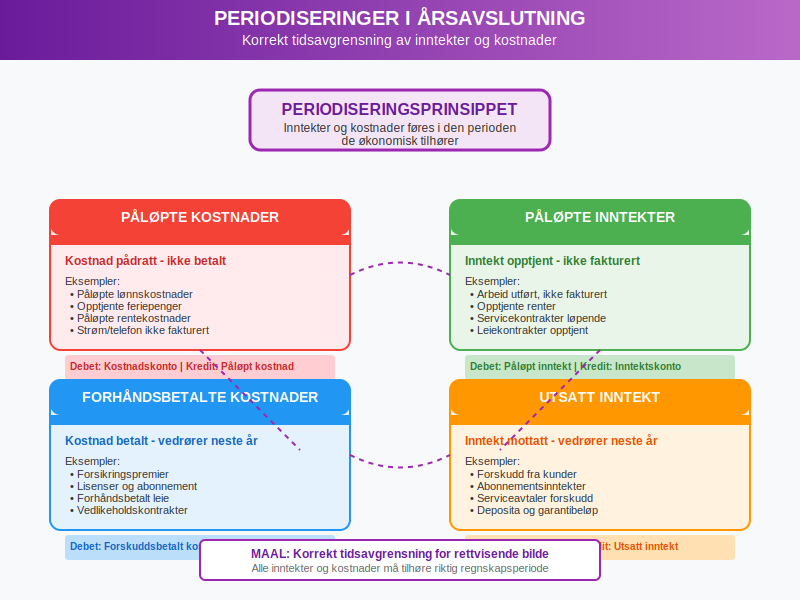
4.3 Teknisk Gjennomføring av Justeringsposter
Systematisk registrering av justeringsposter:
| Type Justering | Debet | Kredit | Forklaring |
|---|---|---|---|
| Påløpt lønn | Lønnskostnad | Påløpt lønn | Opptjent, ikke utbetalt |
| Forhåndsbetalt forsikring | Forskuddsbetalt kostnad | Forsikringskostnad | Justert til riktig periode |
| Utsatt inntekt | Salgsinntekt | Utsatt inntekt | Forskuddsbetaling |
| Avskrivning | Avskrivningskostnad | Akkumulerte avskrivninger | Periodisk verdireduksjon |
Seksjon 5: Varelagerinventering og -vurdering
5.1 Inventering av Varelager
Fysisk inventering er en kritisk komponent i årsavslutningen:
5.1.1 Planlegging av Inventering
- Datofastsettelse: Vanligvis siste virkedag i regnskapsåret
- Personalressurser: Tilstrekkelig og kompetent personale
- Områdedeling: Systematisk inndeling av lagerområder
- Tellerutiner: Dobbelt telling og kontrollprosedyrer
5.1.2 Inventeringsprosess
- Forberedelse: Rydding og organisering av lager
- Telling: Systematisk registrering av alle vareenheter
- Dokumentasjon: Detaljert registrering av telleresultater
- Kontroll: Kryssjekk og verifisering av tellinger
- Rapportering: Sammenstilling av endelige resultater
5.2 Verdivurdering av Varelager
Varelager skal verdsettes til laveste verdi av anskaffelseskost og netto realisasjonsverdi:
5.2.1 Anskaffelseskost
FIFO-metoden (First In, First Out):
- Eldste innkjøp selges først
- Lagerverdien baseres på nyeste innkjøpspriser
- Enklest å implementere i inflasjonsperioder
Gjennomsnittskostmetoden:
- Vektet gjennomsnitt av alle innkjøp
- Jevner ut prisvariasjoner over tid
- Gir stabil kostpris
5.2.2 Netto Realisasjonsverdi
Vurdering av markedsverdier og salgsevne:
- Markedspriser: Aktuelle salgspriser i markedet
- Lagerstatus: Identifikasjon av ukurante varer
- Sesongvariasjoner: Justering for tidsmessige faktorer
- Nedskrivningsbehov: Reduksjon av bokført verdi ved verdifall
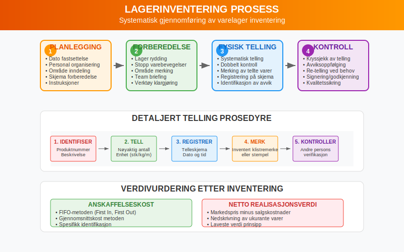
Seksjon 6: Avskrivninger og Verdijusteringer
6.1 Systematiske Avskrivninger
Avskrivning reflekterer det systematiske verdifallet på anleggsmidler over deres brukstid.
6.1.1 Lineære Avskrivninger
Beregningsmetode: Årlig avskrivning = (Anskaffelseskost - Utrangeringsverdi) / Brukstid i år
Eksempel:
- Anskaffelseskost: NOK 1.000.000
- Utrangeringsverdi: NOK 100.000
- Brukstid: 10 år
- Årlig avskrivning: (1.000.000 - 100.000) / 10 = NOK 90.000
6.1.2 Saldoavskrivninger
Saldoavskrivning gir høyere avskrivninger i begynnelsen av brukstiden:
- Metode: Fast prosentsats på gjenstående bokført verdi
- Fordel: Reflekterer raskere teknologisk utvikling
- Ulempe: Kompleksere beregninger og planlegging
6.2 Extraordinære Verdijusteringer
6.2.1 Nedskrivninger
Når eiendelers markedsverdi eller bruksverdi er lavere enn bokført verdi:
- Identifikasjon: Signaler om verdifall
- Beregning: Forskjell mellom bokført verdi og gjenvinnbar verdi
- Regnskapsføring: Direkte belastning av årets resultat
- Dokumentasjon: Grundig begrunnelse for nedskrivningen
6.2.2 Oppskrivninger
I spesielle tilfeller kan eiendeler skrives opp:
- Juridiske krav: Kun når tillatt etter regnskapsreglene
- Markedsverdi: Dokumentert økning i markedsverdi
- Begrensninger: Ikke over tidligere nedskrevne beløp
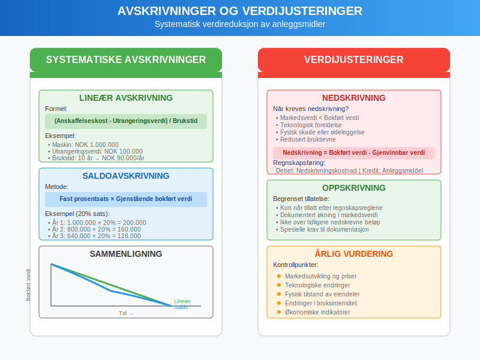
Seksjon 7: Kreditorhåndtering og Gjeldsvurdering
7.1 Systematisk Gjennomgang av Gjeld
Årsavslutningen krever grundig gjennomgang av alle gjeldsforhold:
7.1.1 Leverandørgjeld
Avstemmingsprosess:
- Sammenligning av regnskapsbalanse mot leverandørkontoutskrift
- Kontroll av ubetalte fakturaer og kreditnotaer
- Identifikasjon av transitposter og feilregistreringer
- Korrigering av valutadifferanser ved utenlandsk gjeld
7.1.2 Låneavstemminger
Banklån og andre eksterne lån:
- Avstemming mot bankoppgaver og låneavtaler
- Kontroll av rentekostnader og avdragsplaner
- Vurdering av lånevilkår og covenant-oppfyllelse
- Beregning av kortsiktig del av langsiktig gjeld
7.2 Avsetninger og Betingede Forpliktelser
7.2.1 Avsetninger for Forpliktelser
Kriterier for avsetning:
- Nåværende forpliktelse som resultat av tidligere hendelser
- Sannsynlig utbetaling av ressurser
- Pålitelig estimat av beløpet
Vanlige avsetninger:
- Garantiforpliktelser på solgte produkter
- Restruktureringskostnader som er besluttet
- Rettslige tvister med sannsynlig tap
- Miljøoppriksningskostnader
7.2.2 Betingede Forpliktelser
Identifikasjon og vurdering:
- Garantier gitt på vegne av tredjeparter
- Pågående rettslige prosesser med usikker utgang
- Skattemessige tvistesaker
- Produktansvarssaker
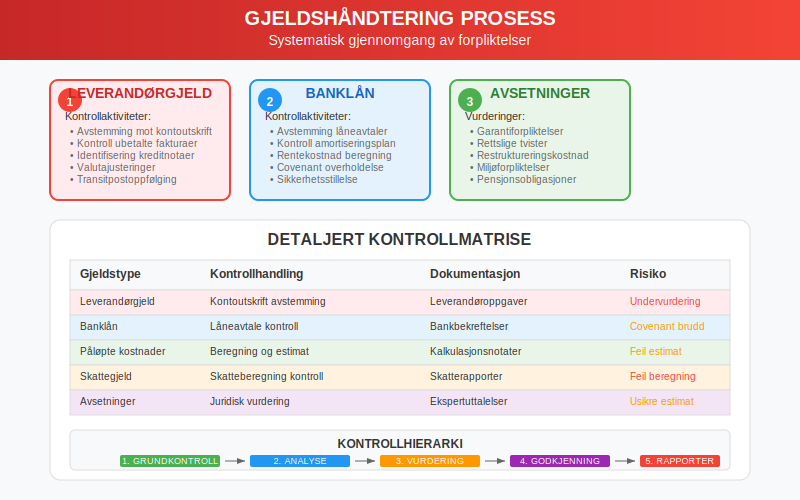
Seksjon 8: Inntektsføring og Salgstransaksjoner
8.1 Prinsipper for Inntektsføring
Inntektsføring må følge strenge kriterier for å sikre korrekt periodisering:
8.1.1 Leveringsbasert Inntektsføring
- Levering: Varene er overlevert til kunde
- Risiko: Eiendomsrett og risiko er overført
- Betaling: Betalingsforpliktelse er etablert
- Måling: Inntekten kan måles pålitelig
8.1.2 Spesielle Inntektstyper
Tjenestesalg:
- Inntektsføring ved ferdigstillelse eller etter fremdriftsmetoden
- Håndtering av tungt salær og langvarige kontrakter
- Periodisering av kontinuerlige tjenester
Royalties og lisensinntekter:
- Tidsmessig periodisering etter avtalevilkår
- Håndtering av variable inntektskomponenter
- Valutajusteringer ved internasjonale avtaler
8.2 Håndtering av Året Rundt-transaksjoner
8.2.1 Desember-leveranser
Kontrollpunkter:
- Verifisering av leveringsdatoer og transportdokumenter
- Kontroll av faktureringsdatoer og betalingsvilkår
- Håndtering av “cut-off” problematikk ved årsskiftet
- Avstemming av vareleveranser mot fakturering
8.2.2 Januarleveranser
Retrospektiv kontroll:
- Identifikasjon av leveranser som tilhører foregående år
- Korrigering av feilaktig periodisering
- Justering av både inntekter og relaterte kostnader
- Dokumentasjon av korreksjonene
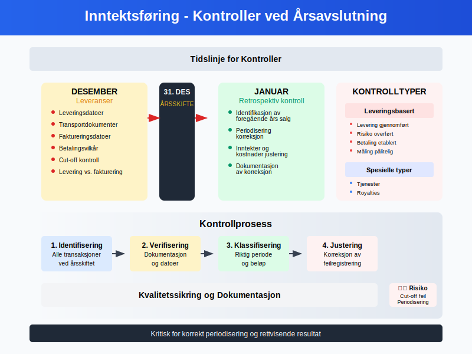
Seksjon 9: Skattemessige Vurderinger og Justeringer
9.1 Skattepliktig Inntekt
Beregning av skattepliktig inntekt krever justeringer fra regnskapsmessig resultat:
9.1.1 Permanente Forskjeller
Ikke-fradragsberettigede kostnader:
- Representasjonskostnader over fradragsgrensen
- Bøter og administrative sanksjoner
- Visse typer gaver og tilskudd
- Kostnader til privatformål
Skattefrie inntekter:
- Mottatte konsernbidrag mellom norske selskaper
- Utbytte fra kvalifiserte eierposisjoner
- Gevinster unntatt fra beskatning
9.1.2 Timing-forskjeller
Avskrivningsforskjeller:
- Regnskapsmessige avskrivninger versus skattemessige avskrivninger
- Håndtering av ulike saldoavskrivninger
- Maksimale avskrivningssatser etter skatteloven
Andre timing-forskjeller:
- Nedskrivninger og reversering av nedskrivninger
- Avsetninger som ikke er fradragsberettigede
- Forskjeller i periodisering av inntekter og kostnader
9.2 Utsatt Skatt
Utsatt skatt representerer fremtidige skattekonsekvenser av timing-forskjeller:
9.2.1 Beregning av Utsatt Skatt
- Identifikasjon: Alle timing-forskjeller mellom regnskaps- og skatteverdier
- Beregning: Timing-forskjeller × gjeldende skattesats
- Klassifisering: Utsatt skattefordel versus utsatt skattegjeld
- Netting: Motregning når vilkårene er oppfylt
9.2.2 Regnskapsføring
| Scenario | Debet | Kredit | Effekt |
|---|---|---|---|
| Økning i utsatt skattegjeld | Skattekostnad | Utsatt skattegjeld | Høyere skatt |
| Reduksjon i utsatt skattegjeld | Utsatt skattegjeld | Skattekostnad | Lavere skatt |
| Økning i utsatt skattefordel | Utsatt skattefordel | Skattekostnad | Lavere skatt |
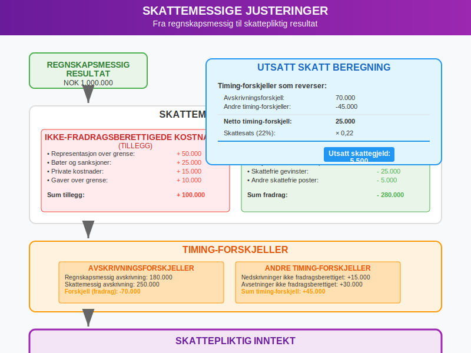
Seksjon 10: Kvalitetssikring og Internkontroll
10.1 Systematisk Kvalitetskontroll
Kvalitetssikring av årsavslutningen krever systematisk tilnærming:
10.1.1 Analytiske Prosedyrer
Sammenligning med forrige år:
- Analyse av vesentlige endringer i balanseposter
- Forklaring av avvik i størrelsesorden og utviklingstrender
- Kontroll av nøkkeltall og forhold
Budsjett- og prognosesammenligninger:
- Avviksanalyse mot opprinnelige budsjetter
- Forklaring av større avvik fra prognoser
- Vurdering av realisme i forutsetninger
10.1.2 Detaljkontroller
Stikkprøvekontroller:
- Tilfeldig utvalg av transaksjoner for detaljkontroll
- Sporing av transaksjoner fra bilag til hovedbok
- Kontroll av godkjennings- og autorisasjonsrutiner
Fullstendighetskontroller:
- Kontroll av nummerserier på fakturaer og bilag
- Avstemming av sub-ledgers mot hovedbok
- Kontroll av at alle perioder og avdelinger er inkludert
10.2 Internkontrollsystemer
10.2.1 Fire-øyne-prinsippet
Segregering av oppgaver:
- Adskillelse mellom autorisasjon, registrering og oppbevaring
- Krav om to signaturer på betalinger over definerte beløpsgrenser
- Rotasjon av personale i sensitive funksjoner
10.2.2 Dokumentasjon og Sporbarhiet
Kontrollspor:
- Komplett dokumentasjon av alle justeringsposter
- Godkjenning og autorisasjon av alle endringer
- Oppbevaring av støttedokumentasjon og analyser
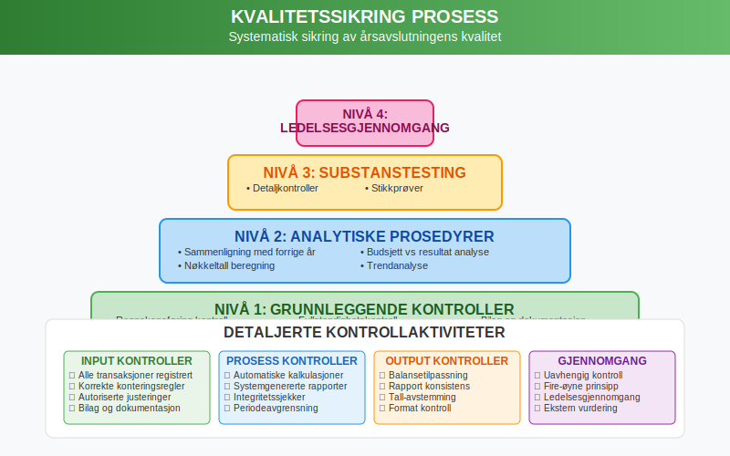
Seksjon 11: Digitalisering og Moderne Verktøy
11.1 Teknologiske Løsninger
Moderne regnskapssystemer tilbyr avanserte funksjoner for årsavslutning:
11.1.1 Automatiserte Prosesser
Automatiske avstemminger:
- Bankavstemminger med direkte integrasjon
- Automatisk matching av fakturaer og betalinger
- Systemgenererte periodiseringsposter
Intelligent dataanalyse:
- Automatisk identifikasjon av uvanlige transaksjoner
- Predictive analytics for risikostyring
- Real-time overvåking av nøkkeltall
11.1.2 Integrasjon og Dataflyt
ERP-systemer:
- Sømløs integrasjon mellom moduler (regnskap, lager, innkjøp, salg)
- Eliminering av manuell datainntasting og overføringer
- Real-time oppdatering av finansielle data
Eksterne integrasjoner:
- Direkte kobling til banker for kontooversikter
- Automatisk import av kursinformasjon
- Integrasjon med offentlige rapporteringsportaler
11.2 Kunstig Intelligens og Maskinlæring
11.2.1 Automatisk Kategorisering
Smart bokføring:
- AI-basert kategorisering av transaksjoner
- Læring fra historiske data og mønstre
- Reduksjon av manuelle feil og tidsforbruk
11.2.2 Prediktiv Analyse
Risikostyring:
- Tidlig identifikasjon av potensielle problemer
- Prognosemodeller for kontantstrøm
- Automatisk varsling ved avvik fra normalmønstre
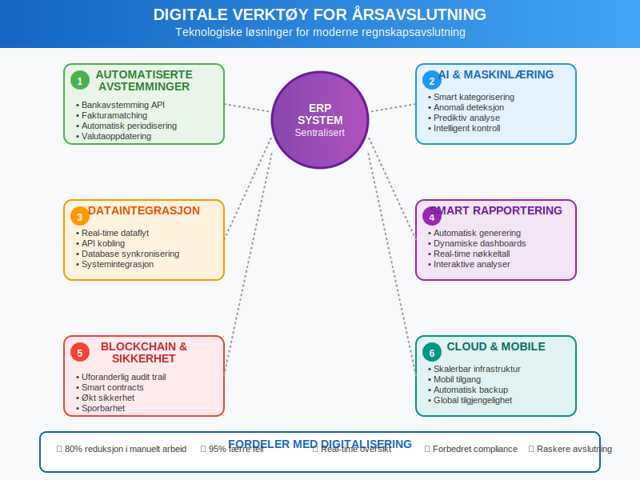
Seksjon 12: Rapportering og Kommunikasjon
12.1 Finansielle Rapporter
Årsavslutningen resulterer i flere kritiske finansielle rapporter:
12.1.1 Hovedregnskaper
Resultatregnskap:
- Systematisk presentasjon av inntekter og kostnader
- Klassifisering etter art eller funksjon
- Sammenligningstall fra foregående år
- Fullstendig oversikt over eiendeler, gjeld og egenkapital
- Korrekt klassifisering mellom kortsiktige og langsiktige poster
- Noteinformasjon for komplekse poster
- Analysere kontantstrømmer fra drift, investering og finansiering
- Forklaring av endringer i kontantbeholdning
- Grunnlag for likviditetsanalyse
12.1.2 Tilleggsrapporter
Noter til regnskapet:
- Detaljert forklaring av regnskapsprinsipper
- Utfyllende informasjon om større balanseposte
- Informasjon om betingede forpliktelser og usikkerhet
Årsberetning:
- Ledelsens vurdering av resultater og utvikling
- Redegjørelse for fremtidsutsikter og strategier
- Informasjon om vesentlige hendelser og risikofaktorer
12.2 Interessentkommunikasjon
12.2.1 Interne Interessenter
Eiere og investorer:
- Presentasjon av årsresultater og nøkkeltall
- Forklaring av strategiske initiativ og investeringer
- Prognoser og fremtidsutsikter
Ledelse:
- Detaljerte management-rapporter med analyser
- Budsjett- og prognoseavvik
- Rekommandasjoner for forbedringer
12.2.2 Eksterne Interessenter
Finansinstitusjoner:
- Bankrapporter og covenant-dokumentasjon
- Likviditets- og soliditetsanalyser
- Informasjon om betydelige endringer i risikoprofil
Offentlige myndigheter:
- Selvangivelse for bedrifter
- MVA-oppgjør og -avstemminger
- Statistisk rapportering til SSB og andre organer
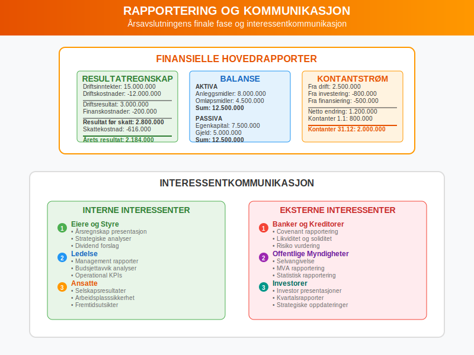
Seksjon 13: Spesielle Situasjoner og Utfordringer
13.1 Fusjoner og Oppkjøp
Årsavslutning ved selskapsendringer krever spesiell oppmerksomhet:
13.1.1 Fusjonsprosessen
Regnskapsmessige vurderinger:
- Verdsettelse av eiendeler og gjeld på overtakelsestidspunktet
- Identifikasjon og måling av goodwill
- Harmonisering av regnskapsprinsipper
- Eliminering av interne transaksjoner
13.1.2 Oppkjøpsregnskapet
Allokering av kjøpspris:
- Identifikasjon av identifiserbare eiendeler og forpliktelser
- Måling til virkelig verdi på kjøpstidspunktet
- Beregning av goodwill som restverdi
- Periodisering av transaksjonskoste
13.2 Internasjonale Operasjoner
13.2.1 Valutaomregning
Transaksjoner i utenlandsk valuta:
- Måling på transaksjonstidspunktet til spotkurs
- Omregning av monetære poster på balansedagen
- Håndtering av valutagevinster og -tap
- Sikringsregnskapsføring ved relevant
Utenlandske datterselskaper:
- Omregning av årsregnskap til rapporteringsvaluta
- Håndtering av omregningsdifferanser
- Konsolidering med morselskap
13.2.2 Transfer Pricing
Internprising mellom konsernselskaper:
- Dokumentasjon av armlengdes prinsipp
- Vurdering av prisfastsettelse på immaterielle eiendeler
- Overholdelse av lokale dokumentasjonskrav
- Risikostyring relatert til skattemessige justeringer
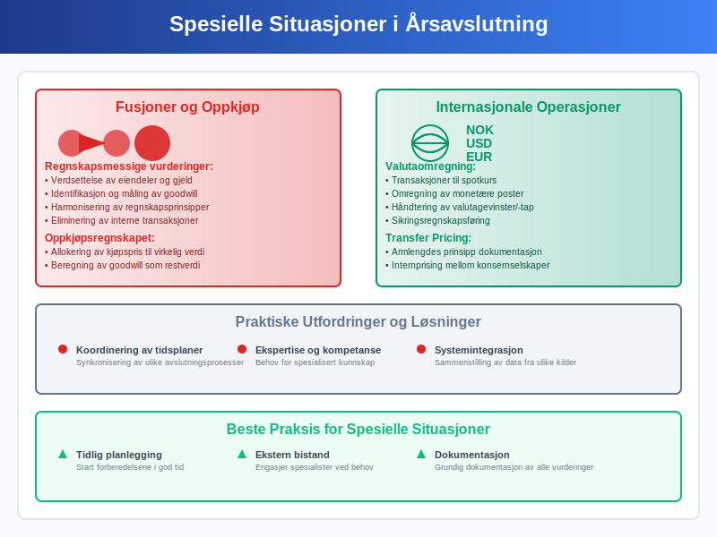
Seksjon 14: Fremtidige Trender og Utvikling
14.1 Regulatoriske Endringer
Regnskapsstandarder utvikler seg kontinuerlig:
14.1.1 IFRS-utvikling
Nye standarder:
- IFRS 16 Leieavtaler og dens praktiske implementering
- IFRS 17 Forsikringskontrakter for relevante virksomheter
- Kontinuerlige oppdateringer og tolkningsuttalelser
14.1.2 Nasjonal Tilpasning
Norske særregler:
- Tilpasninger til norske forhold og tradisjon
- Forenklingsregler for små og mellomstore bedrifter
- Koordinering med skattelovgivning
14.2 Teknologisk Revolusjon
14.2.1 Blockchain og Distribuerte Ledgers
Potensielle anvendelser:
- Økt sikkerhet og sporbarhet i transaksjonsregistrering
- Automatisering av komplekse transaksjoner gjennom smart contracts
- Reduksjon av avstemmings- og kontrollbehov
14.2.2 Avansert Analyse og AI
Fremtidens muligheter:
- Prediktive modeller for risikostyring og prognoser
- Automatisk generering av finansielle rapporter
- Intelligent identifikasjon av feil og uregelmessigheter
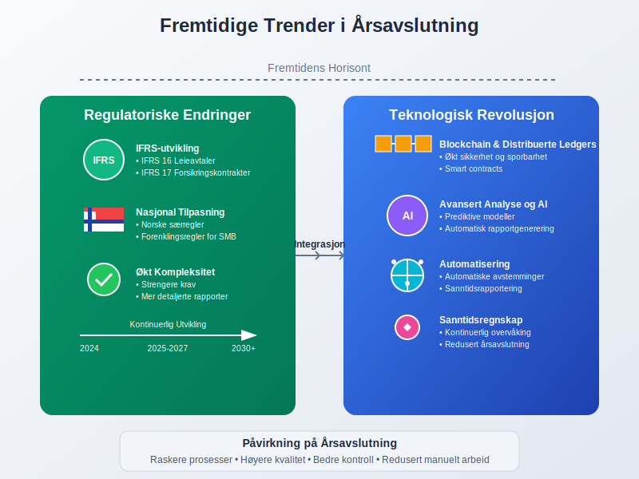
Seksjon 15: Praktiske Tips og Beste Praksis
15.1 Planlegging og Forberedelse
Vellykkede årsavslutninger bygger på solid planlegging:
15.1.1 Tidlig Start
- Månedlige avstemminger: Sørg for at alle kontoer stemmer hver måned
- Kvartalsvise gjennomganger: Identifiser potensielle problemer tidlig
- Løpende dokumentasjon: Oppretthold fullstendig dokumentasjon gjennom året
15.1.2 Kompetanseutvikling
- Opplæring: Sørg for at personalet har nødvendig kompetanse
- Ekstern bistand: Planlegg behov for spesialisthjelp i god tid
- Kvalitetssikring: Etabler robuste kontrollrutiner
15.2 Effektivisering av Prosessen
15.2.1 Standardisering
Prosedyrer og sjekklister:
- Detaljerte arbeidsoppgaver med ansvarsdeling
- Standardiserte arbeidsformer og dokumentmaler
- Tidsplaner med milepæler og kontrollpunkter
15.2.2 Teknologi som Hjelpemiddel
Digitale løsninger:
- Maksimer bruken av automatiske funksjoner
- Invester i integrasjon mellom systemer
- Utnytt analyseverktøy for effektiv kontroll
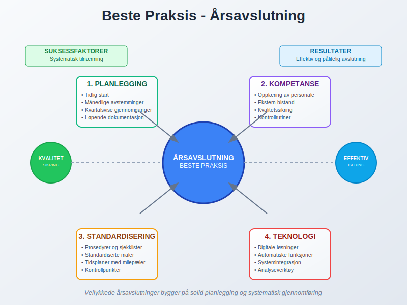
Konklusjon
Årsavslutning er en omfattende og kritisk prosess som krever systematisk planlegging, teknisk kompetanse og grundig kvalitetskontroll. Prosessen sikrer at virksomhetens finansielle rapporter gir et rettvisende bilde av den økonomiske situasjonen og overholder alle relevante regnskapsstandarder og juridiske krav.
Sentrale Suksessfaktorer
Planlegging og organisering:
- Tidlig start med systematisk gjennomgang av alle områder
- Klar ansvarsdeling og kompetent personale
- Tilstrekkelige ressurser og realistiske tidsfrister
Teknisk gjennomføring:
- Grundig avstemming og avregning av alle balanseposter
- Korrekte periodiseringer og justeringsposter
- Nøyaktige avskrivnings- og verdivurderinger
Kvalitetssikring:
- Systematiske kontrollprosedyrer og analytiske tester
- Dokumentasjon av alle vesentlige vurderinger og beslutninger
- Uavhengig gjennomgang og godkjenning
Fremtidens Årsavslutning
Teknologisk utvikling vil fortsette å transformere årsavslutningsprosessen med økt automatisering, kunstig intelligens og sanntidsrapportering. Samtidig vil regulatoriske krav og kompleksitet trolig øke, noe som understreker viktigheten av solid kompetanse og robuste prosesser.
Den moderne årsavslutningen representerer en balanse mellom tradisjonell regnskapsføring og innovativ teknologi, hvor målet er å levere pålitelige finansielle rapporter som tjener virksomhetens interessenter og støtter strategiske beslutninger. En vellykket årsavslutning danner ikke bare grunnlaget for lovpålagt rapportering, men fungerer også som et strategisk verktøy for analyse, planlegging og kommunikasjon med virksomhetens interessenter.